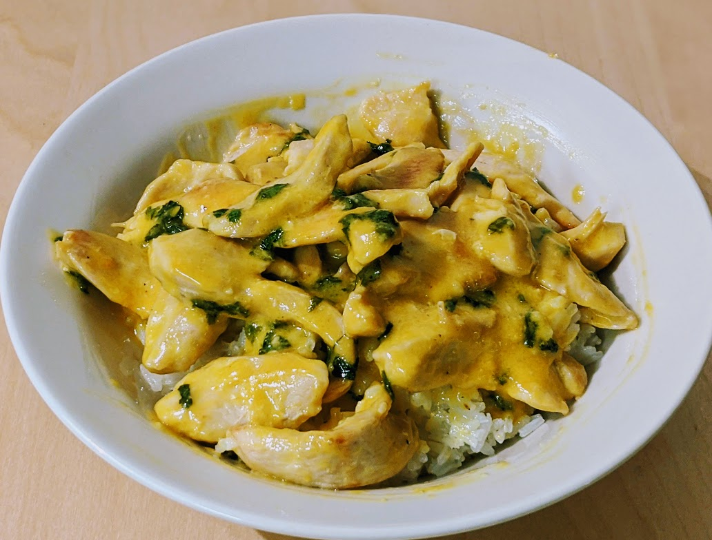

Aiguillettes de poulet aux mandarines

Pour 4 personnes :
- 600g de filets ou d'aiguillettes de poulet
- 8 mandarines
- 20cl de crème liquide (voire plus si tu veux plein de sauce)
- Coriandre en feuilles
- Sel, poivre, huile d'olive
- Saler et poivrer le poulet, puis le couper en morceaux fins que l'on fait dorer dans de l'huile d'olive.
- Pendant ce temps, presser les mandarines et récupérer le jus. Lorsque le poulet est bien doré, verser le jus dans la poêle et faire réduire à feu fort cinq bonnes minutes.
- Lorsqu'il n'y a plus qu'un tiers du liquide original, ajouter la crème et la coriandre, mélanger et faire cuire à feu doux jusqu'à ce que ça fasse des bubulles.
- Servir bien chaud avec du riz basmati.